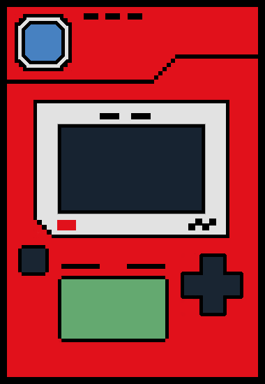

LinkedIn
LinkedIn
 GitHub
GitHub
WORK EXPERIENCE
IT Student Professional Worker / Intern
July 2024 - July 2025
Los Angeles Department of Water and Power (Los Angeles, CA)
- Provided front-line IT support and ticket triage during the organization's Workday system launch, ensuring timely resolution of user-reported issues.
- Delivered in-person technical support addressing questions and troubleshooting issues related to entering time, system access, time approval, and other Workday functionalities.
- Tested and implemented a new dashboard and format for documenting project processes.
- Improved project management site for stakeholders by adding an FAQ section.
- Assissted in leading a project to transition from VPN connections to VDI to enhance security.
- Generated detailed reports for company's IT major and guided projects, providing insights and data analysis for supervisors utilizing Smartsheet, Power BI, and Excel.
- Recorded meeting minutes for project syncs and weekly meetups with the IT department.
Lead Usability / UI/UX Researcher (Game: Donuts!)
August 2024 - May 2025
USC Advanced Games Project (Los Angeles, CA)
- Led usability research/testing for a year-long game development project (Donuts!) with a 50+ member cross-functional team.
- Executed weekly Rapid Iterative Testing and Evaluation (RITE) sessions to gather user feedback and identify usability issues, communicating directly with Design, Art, UI/UX, Engineering, and Narrative teams.
- Revamped the game's tutorial by translating user feedback into actionable improvments, enabling new players to consistently master basic tricks, complete deliveries, and understand core objectives.
- Developed and mainted a playtesting schedule alongside the Lead Producer and Director
- Delivered biweekly presentation on usability progress ("State of UX") to faculty and peers.
Full Stack Web Developer
August 2024 - December 2024
USC Keck School of Medicine (Los Angeles, CA)
- Worked in a team of 5 software developers using Agile framework for the development of a mobile and web application in collaboration with the Director of Educational Technology at USC Keck Medical school to streamline student attendance tracking using Transact scanner devices connected to iPads.
- Supported multiple ID entry methods including swipe, tap (NFC), and manual entry.
- Developed an accompanying web service using HTML/CSS, Javascript and Node.js to retrieve student data from an external API database which can be accessed and edited by administrators through a secure interface.
- Met with stakeholders and lead software engineer to discuss/align project requirements and design on a weekly basis. Met with team members in daily standups to discuss progress and blockers.
Step Up Tutor / Leadership Program
January 2023 - December 2024
Step Up Tutoring (Los Angeles, CA)
- Provided online tutoring to 3rd - 7th grade students in core mathematics and english from under-resourced communities, primarily Black and Hispanic, across 3 different schools.
- Delivered homeworked assistance and personalized academic support, using assessments to determine student needs.
- Supported literacy development through guided reading session using ReadWorks.
- Enhanced math learning using interactive tools such as EEDI and Nearpod.
- Fostered social development by incorporating warm-up and close-out activities.
Performance Director & Social Events Coordinator
August 2022 - July 2025
Spade A Dance Team (Los Angeles, CA)
- Directed and coordinated social event logistics including performances on and off-campus, photoshoots, semester retreats, random play dances, fundraisers, team bonding activities, and annual award shows.
- Collaborated with renowned Korean Entertainment agencies including Starship, SM, YG, and MNET for Artist dance collaborations, televised variety show appearances, event performances, and pre-concert performances.
- Produced and edited dance videos, garnering more than 22k subscribers and 6.2 million views on YouTube.
- Successfully planned and executed a dance showcase at a major campus venue to perform 23 acts, involving over 1 year of planning and meticulous communication with stage technicians, the house manager, and over 40 performers. Created show graphics, lighting design, MC lines/speeches, and audio files.
Barista
August 2020 - August 2022
T4 Boba Tea (Los Gatos, CA)
- Collaborated with 2-3 team members in a fast-paced environment, preparing various drinks and food items, and communicated with customers.
- Assisted in training new staff on drink preparation techniques, store procedures, and customer service best practices.
- Monitored and restocked inventory of ingredients and supplies.
SKILLS
- C, C++, Dart, HTML/CSS, Java, JavaScript, PHP, Python, SQL, Swift.
- Bootstrap, Cucumber, Flutter, Jest, JUnit, Maven, Node.js, React, SpringBoot, Tailwind CSS.
- Apache Tomcat, AWS, ChatGPT, Claude, Cursor, Docker, Figma, Gemini Pro, Git, GitHub, Heroku, Perplexity, Unreal Engine, VSCode, Windsurf.
- MongoDB, mySQLWorkbench, phpMyAdmin, PostgreSQL, Supabase.
EDUCATION
University of Southern California (Los Angeles, CA)
Bachelor's of Science, Computer Science
Honors: Magna Cum Laude, Dean's List (Every Semester)

| Major Coursework | ||
| Cumulative GPA: 3.8 | ||
| Course Name | Grade | Units |
| Introduction to Artificial Intelligence | A- | 4.0 |
| Advanced Games Project | A- | 4.0 |
| Introduction to Internetworking | B+ | 4.0 |
| Design and Construction of Large Software Systems | A | 4.0 |
| Applied Python | A | 2.0 |
| Computer Aided Modeling for 3D Product Design | A | 2.0 |
| Introduction to Operating Systems | A- | 4.0 |
| Software Engineering | B+ | 4.0 |
| Cross-Platform App Development | A | 4.0 |
| Full-Stack Web Development | A | 4.0 |
| Introduction to Computer Systems | A | 4.0 |
| Introduction to Algorithmns and Theory of Computing | B+ | 4.0 |
| Principles of Software Development | A- | 4.0 |
| Data Structures and Object Oriented Design | A | 4.0 |
| Programming in Python | A | 2.0 |
| Discrete Methods in Computer Science | A- | 4.0 |
| Introduction to Embedded Systems | A | 4.0 |
| Introduction to Programming | A | 4.0 |
| Advanced Writing | A | 4.0 |